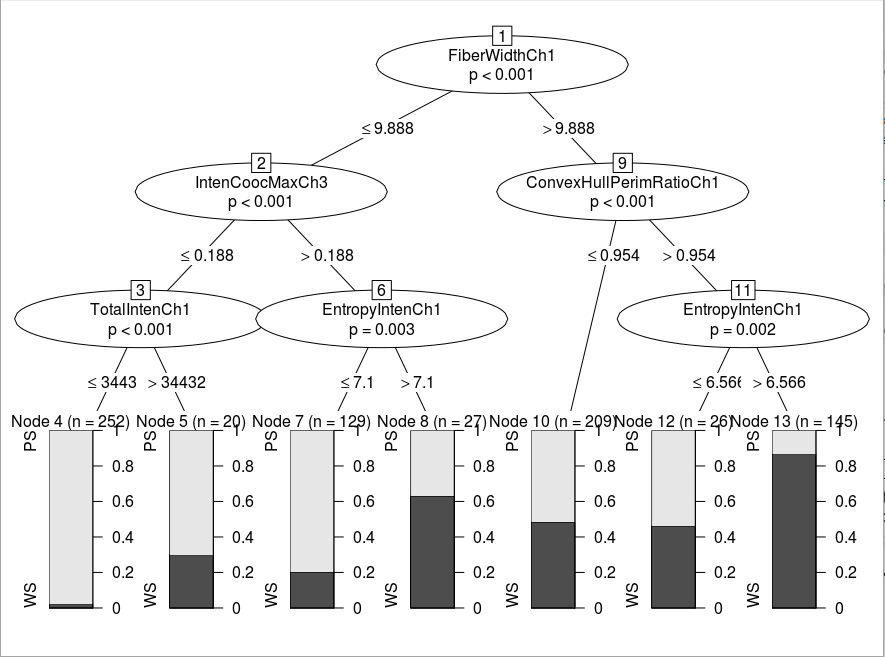
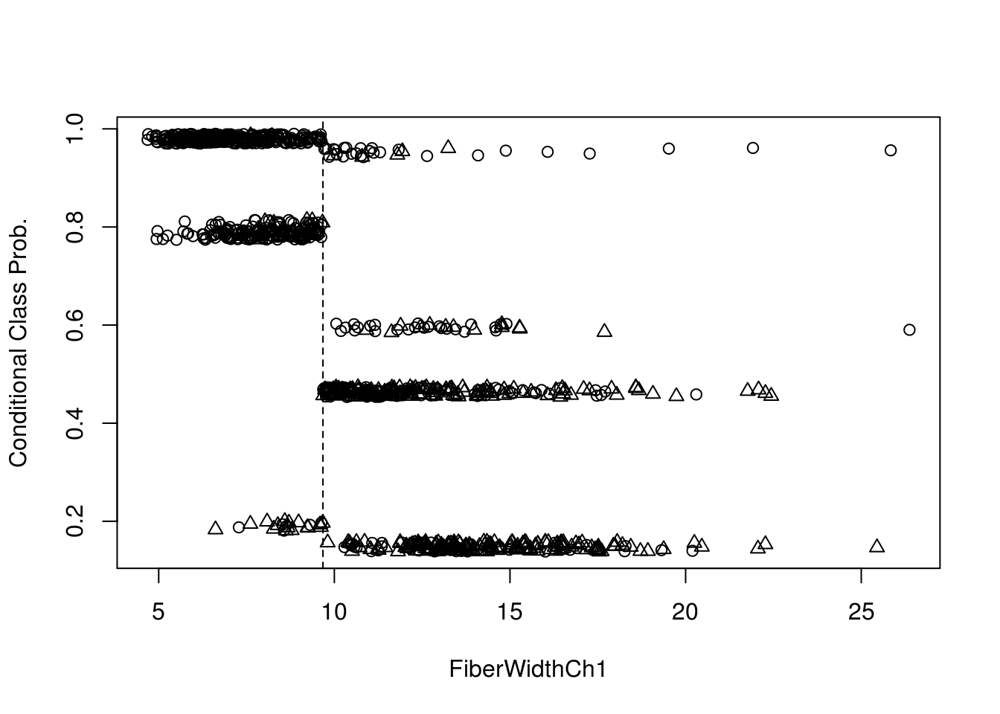
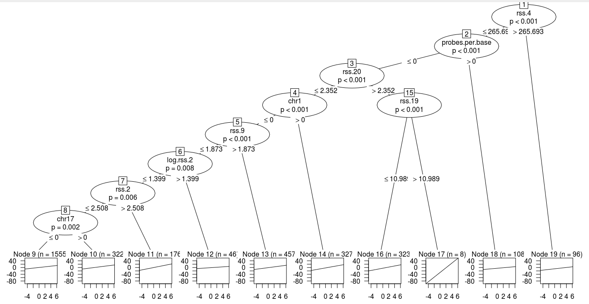

Train and test a decision tree model
Easy
Parismita Das
11 January 2018
To run train and test a decision tree model using rpart and partykit. And Using 5-fold cross-validation to compare the learned decision tree models to a trivial baseline learner.
Using rpart
Importing libraries
## Loading required package: grid## Loading required package: libcoin## Loading required package: mvtnorm## Loading required package: lattice## Loading required package: ggplot2The dataset using is segmentationData of caret package. The following code seperates test and train data and removes “Case” column from dataset.
data("segmentationData", package = "caret")
segmentationData$Cell<-NULL
train<-subset(segmentationData,Case=="Train")
test<-subset(segmentationData,Case=="Test")
train$Case<-NULL
test$Case<-NULLIn the dataset, the target data to pe predicted is “Class” with two classes as “PS” and “WS”. The formula required for creating tree using rpart consist of all features expt y,time,status as given below
form <- Class ~ . - ClassThe trivial baseline
Creating trivial desicion tree, keeping xval=0 signifies no cross-validation implemented.
ctrl <- rpart.control(minsplit = 15, minbucket = 5, xval=0)
tree <- rpart(formula = form, data = train, na.action = na.rpart, control = ctrl, method = "class")The desicion tree formed is:
Predicting the target class and calculating the missclassification error:
out<-predict(tree,test)
status_predicted<- colnames(out)[max.col(out, ties.method = c("first"))] # predicted
status_input<- as.character (test$Class) # actuals
mn<- mean (status_input != status_predicted) # misclassification %Hence the error of misclassification is:
## [1] "error: 21.2871287128713 %"Desicion tree model using cross validation
Creating desicion tree, using xval=5 which means 5-fold cross-validation implemented.
ctrl <- rpart.control(minsplit = 15, minbucket = 5, xval=5)
tree <- rpart(formula = form, data = train, na.action = na.rpart, control = ctrl, method = "class")The complexity parameter (cp) is used to control the size of the decision tree and to select the optimal tree size. Hence plotting cross validation error vs cp

##
## Classification tree:
## rpart(formula = form, data = train, na.action = na.rpart, method = "class",
## control = ctrl)
##
## Variables actually used in tree construction:
## [1] AvgIntenCh1 AvgIntenCh4 ConvexHullAreaRatioCh1
## [4] EqEllipseOblateVolCh1 FiberWidthCh1 IntenCoocASMCh3
## [7] KurtIntenCh3 LengthCh1 NeighborMinDistCh1
## [10] ShapeP2ACh1 TotalIntenCh2 VarIntenCh4
##
## Root node error: 373/1009 = 0.36967
##
## n= 1009
##
## CP nsplit rel error xerror xstd
## 1 0.329759 0 1.00000 1.00000 0.041108
## 2 0.160858 1 0.67024 0.69705 0.037245
## 3 0.034853 2 0.50938 0.59517 0.035278
## 4 0.029491 3 0.47453 0.55496 0.034389
## 5 0.018767 4 0.44504 0.55228 0.034327
## 6 0.017426 5 0.42627 0.52279 0.033626
## 7 0.016086 7 0.39142 0.53619 0.033950
## 8 0.012511 9 0.35925 0.55228 0.034327
## 9 0.010724 12 0.32172 0.57373 0.034813
## 10 0.010000 15 0.28954 0.57373 0.034813Pruning the tree using cross validation to prevent overfitting, Thus inappropriate nodes are removed
pdtree<- prune(tree, cp=tree$cptable[which.min(tree$cptable[,"xerror"]),"CP"])The plots of the r-square (apparent and apparent - from cross-validation) versus the number of splits. And the Relative Error(cross-validation) +/- 1-SE from cross-validation versus the number of splits.
##
## Classification tree:
## rpart(formula = form, data = train, na.action = na.rpart, method = "class",
## control = ctrl)
##
## Variables actually used in tree construction:
## [1] AvgIntenCh1 ConvexHullAreaRatioCh1 FiberWidthCh1
## [4] IntenCoocASMCh3 TotalIntenCh2
##
## Root node error: 373/1009 = 0.36967
##
## n= 1009
##
## CP nsplit rel error xerror xstd
## 1 0.329759 0 1.00000 1.00000 0.041108
## 2 0.160858 1 0.67024 0.69705 0.037245
## 3 0.034853 2 0.50938 0.59517 0.035278
## 4 0.029491 3 0.47453 0.55496 0.034389
## 5 0.018767 4 0.44504 0.55228 0.034327
## 6 0.017426 5 0.42627 0.52279 0.033626## Warning in rsq.rpart(pdtree): may not be applicable for this methodPredicting the target class and calculating the missclassification error for pruned tree:
out<-predict(pdtree,test)
status_predicted<- colnames(out)[max.col(out, ties.method = c("first"))] # predicted
status_input<- as.character (test$Class) # actuals
mn<- mean (status_input != status_predicted) # misclassification %Hence the error of misclassification is:
## [1] "error: 20.8910891089109 %"Hence the misclassification error decreased on using k-fold cross-validation.
Using partykit
Using conditional trees to train the desicion tree model
ctrl <- ctree_control(teststat = "quad",minsplit = 40, minbucket = 20)
tree <- ctree(formula = form, data = train, control = ctrl, method = "class")The desicion tree :

Predicting target value and calculating the misclassification error:
#Model Testing
out<-predict(tree,test,type = "prob")
status_predicted<- colnames(out)[max.col(out, ties.method = c("first"))] # predicted
status_input<- as.character (test$Class) # actuals
m <- mean (status_input != status_predicted) # misclassification %
print(m)## [1] 0.2267327Estimated conditional class probabilities depending on the first split variable. And plotting the same:
prob <- predict(tree,test, type = "prob")[,1] + runif(nrow(test), min = -0.01, max = 0.01)
splitvar <- character_split(split_node(node_party(tree)), data = data_party(tree))$name
plot(test[[splitvar]], prob, pch = as.numeric(test$Class), ylab = "Conditional Class Prob.",xlab = splitvar)
abline(v = split_node(node_party(tree))$breaks, lty = 2)
legend(0.15, 0.7, pch = 1:2, legend = levels(test$Class), bty = "n")
Trtf
## Loading required package: mlt## Loading required package: basefun## Loading required package: variables##
## Attaching package: 'variables'## The following object is masked from 'package:ggplot2':
##
## unit## The following object is masked from 'package:grid':
##
## unit##
## Attaching package: 'survival'## The following object is masked from 'package:caret':
##
## clusterUsing interval censored data neuroblastomaProcessed of penaltyLearning package. The interval is consisted in target.mat and feature.mat consist of the features to be trained on.
data(neuroblastomaProcessed, package="penaltyLearning")Considering the datapoints where interval is finite(there is no [-Inf, Inf] intervaled data).
finite.targets <- with(neuroblastomaProcessed, {
data.frame(log.penalty=target.mat[is.finite(target.mat)])
})Creating ctm object later used to fit using mlt.
m <- ctm(as.basis(~log.penalty, data=finite.targets), todistr="Normal")Creating survival object, as response variable for model.
train.Surv <- with(neuroblastomaProcessed, { Surv(target.mat[, 1], target.mat[,2], type="interval2")})Creating training set, fitting ctm object to mlt and trtf trafotree.
train.df <- data.frame(log.penalty=train.Surv, neuroblastomaProcessed$feature.mat)
mlt.fit <- mlt(m, data=train.df)
tree.fit <- trafotree(m, formula = log.penalty ~ ., data=train.df, mltargs=list(theta=coef(mlt.fit)))Create tree using partykit
node_party(tree.fit) # 19-node tree.## [1] root
## | [2] V19 <= 265.69344
## | | [3] V12 <= 0
## | | | [4] V35 <= 2.35227
## | | | | [5] V96 <= 0
## | | | | | [6] V24 <= 1.87282
## | | | | | | [7] V37 <= 1.39945
## | | | | | | | [8] V17 <= 2.50753
## | | | | | | | | [9] V112 <= 0 *
## | | | | | | | | [10] V112 > 0 *
## | | | | | | | [11] V17 > 2.50753 *
## | | | | | | [12] V37 > 1.39945 *
## | | | | | [13] V24 > 1.87282 *
## | | | | [14] V96 > 0 *
## | | | [15] V35 > 2.35227
## | | | | [16] V34 <= 10.98913 *
## | | | | [17] V34 > 10.98913 *
## | | [18] V12 > 0 *
## | [19] V19 > 265.69344 *Plotting the tree: 
Predicting the response and calculating the error of miscalculation. Here, the error is defined as the average value of predicted data that doesnt fall into the interval of target.mat
##prediction
pred.vec <- predict(tree.fit)
pred.log.penalty <- tree.fit$coef[names(pred.vec), "(Intercept)"]
is.lo <- pred.log.penalty < neuroblastomaProcessed$target.mat[, 1]
is.hi <- neuroblastomaProcessed$target.mat[, 2] < pred.log.penalty
is.error <- is.lo | is.hi
mn<- mean(is.error)The error is :
## [1] 0.2358104